| AVALIAÇÃO IMDb |
|---|
| 8,5/10 (220 mil reviews) |
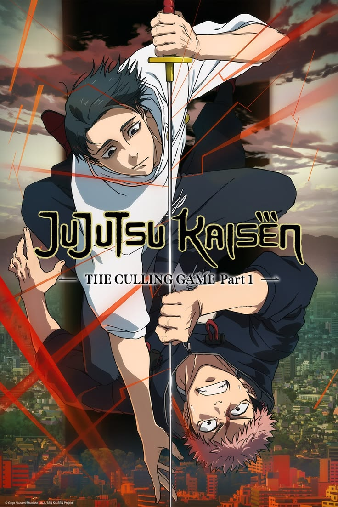
Tipo: Anime / Série de televisão | Gêneros: Ação, drama, fantasia, sobrenatural e shounen
Jujutsu Kaisen acompanha Yuji Itadori, um estudante com capacidades físicas extraordinárias que acaba
entrando no mundo da feitiçaria após engolir um objeto amaldiçoado:
um dos dedos de Ryomen Sukuna,
conhecido como o Rei das Maldições. Com Sukuna passando a existir dentro de seu corpo, Yuji ingressa na
Escola Técnica
Superior de
Jujutsu de Tóquio, onde aprende a manipular energia amaldiçoada e combater criaturas
conhecidas
como Maldições, seres sobrenaturais que surgem a partir das emoções
negativas dos humanos.
Autor: Gege Akutami
Baseado em: Jujutsu Kaisen, de Gege Akutami
Estúdio: MAPPA
Duração: aproximadamente 24 minutos por episódio
Status: Nova parte em produção
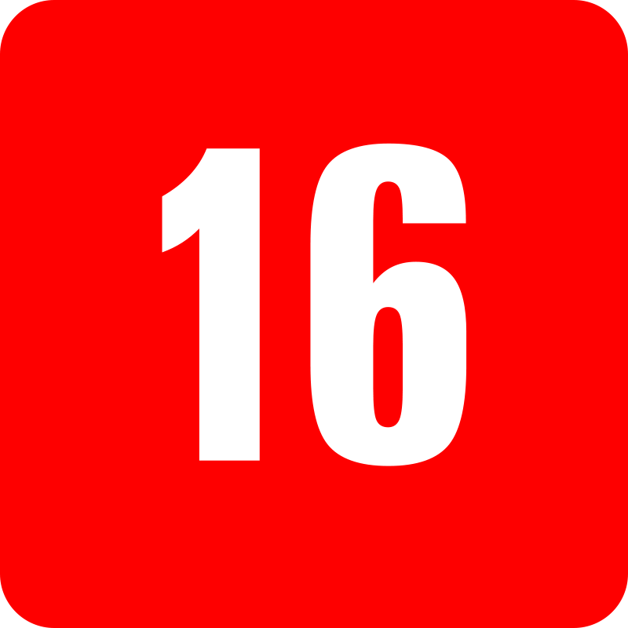
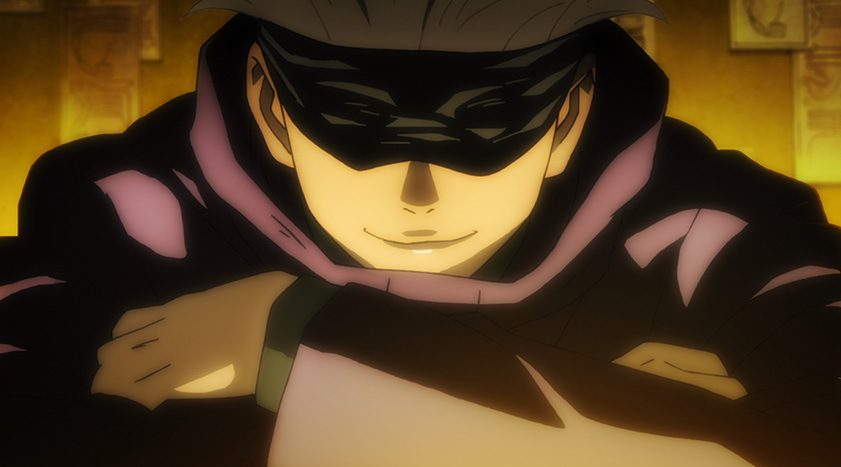
- Preview do Episódio
Sinopse: Yuji Itadori é um estudante com força física extraordinária que leva uma vida
relativamente normal. Tudo muda quando seus colegas quebram o selo de um objeto
amaldiçoado e atraem
criaturas perigosas. Para salvá-los, Yuji toma uma decisão extrema: engole um dos dedos de Ryomen Sukuna, o
Rei das Maldições.
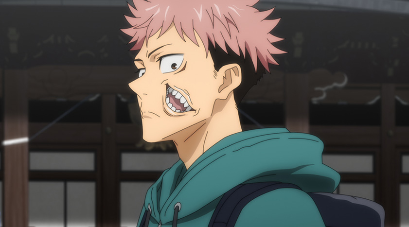
- Preview do Episódio
Sinopse: Após despertar, Yuji conhece Satoru Gojo e descobre que foi condenado à morte por
ter se tornado o receptáculo de Sukuna. Porém, Gojo lhe apresenta uma alternativa:
encontrar e consumir
todos os dedos de Sukuna antes de sua execução. Yuji então começa a entrar de vez no mundo da feitiçaria
Jujutsu.
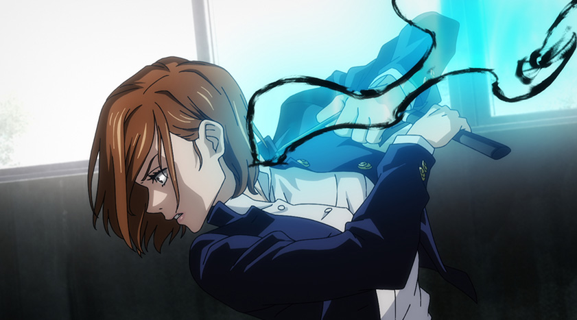
- Preview do Episódio
Sinopse: Yuji e Megumi conhecem Nobara Kugisaki, a terceira aluna do primeiro ano. Gojo leva
Yuji e Nobara até um prédio abandonado para testar suas habilidades contra maldições,
colocando os dois
diante de uma situação que envolve até mesmo um refém.
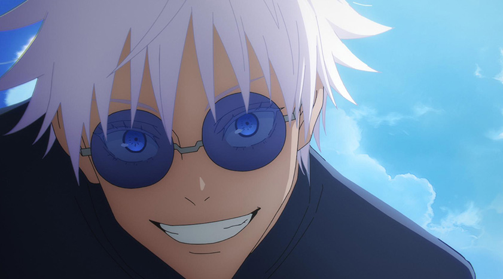
- Preview do Episódio
Sinopse: A história volta para 2006, quando Satoru Gojo e Suguru Geto ainda eram estudantes.
Após um incidente envolvendo Utahime e Mei Mei, Gojo e Geto recebem uma missão
extremamente importante
relacionada a Riko Amanai, iniciando a história do passado dos dois feiticeiros.
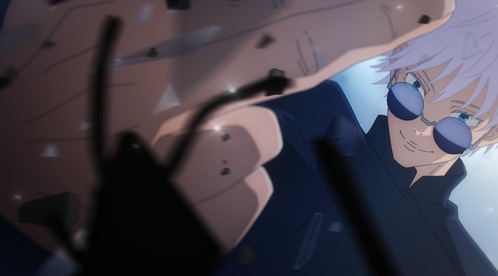
- Preview do Episódio
Sinopse: Gojo e Geto são encarregados de proteger Riko Amanai, a jovem escolhida para se
fundir com Tengen. Entretanto, diferentes grupos passam a persegui-la. Enquanto os dois
tentam mantê-la
segura, um novo e perigoso assassino começa a se movimentar nos bastidores.
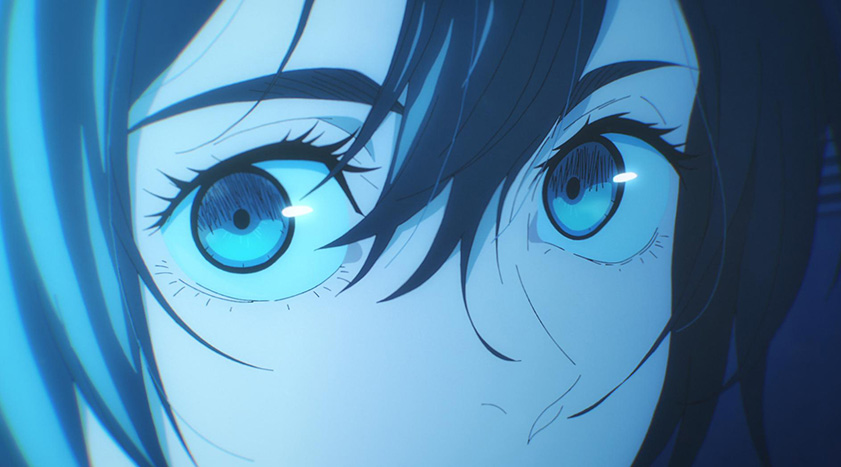
- Preview do Episódio
Sinopse: Depois de enfrentarem vários inimigos atrás da recompensa por Riko, Gojo e Geto
descobrem que Kuroi foi sequestrada. Riko decide participar do resgate, e o grupo parte para o
local
indicado pelos sequestradores, aproximando-se cada vez mais de um confronto decisivo.
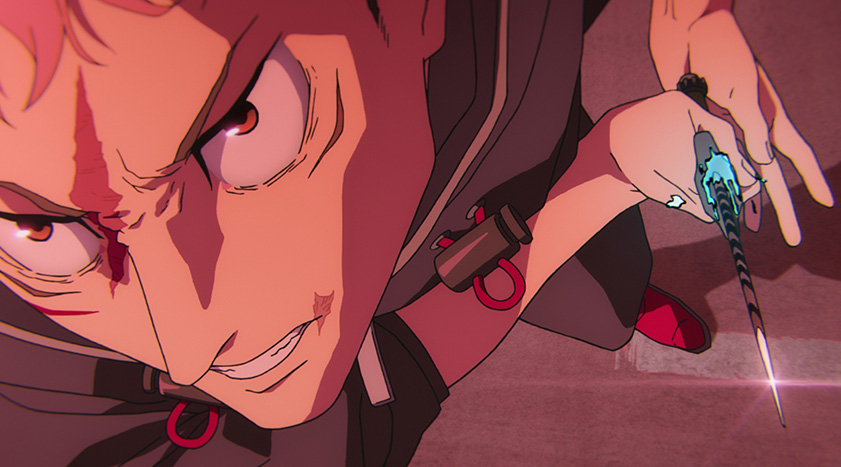
- Preview do Episódio
Sinopse: Depois do Incidente de Shibuya, Tóquio está tomada por maldições. Yuji e Choso
continuam combatendo enquanto Naoya Zenin aparece com seus próprios objetivos. A situação piora
quando
Yuji
descobre que sua sentença de morte voltou a valer e que Yuta Okkotsu foi escolhido como seu executor.
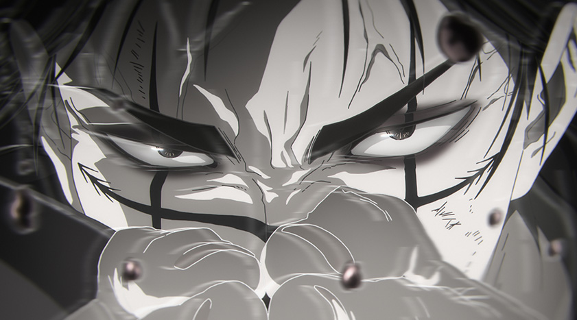
- Preview do Episódio
Sinopse: Yuji é gravemente atingido por Yuta enquanto Choso enfrenta Naoya em uma batalha
intensa. O confronto revela mais das habilidades de Choso e das verdadeiras intenções de Yuta,
preparando
o caminho para a entrada definitiva do grupo no conflito que dominará a temporada.
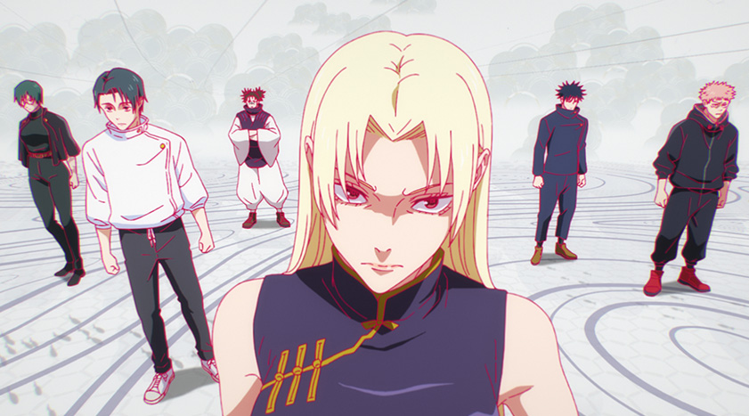
- Preview do Episódio
Sinopse: Yuji se reúne novamente com Megumi e outros aliados. Buscando uma maneira de
libertar Gojo e descobrir o verdadeiro plano do inimigo, o grupo procura Tengen. É então que eles
recebem
uma explicação sobre Kenjaku e o Jogo do Abate, estabelecendo as regras e o principal conflito da nova fase
da história.
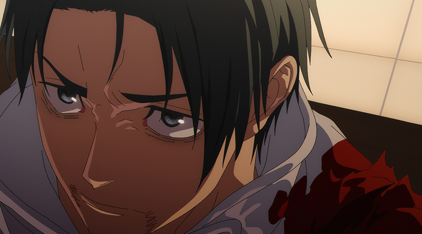
- Preview do Episódio | Clique no Preview para Assistir o Episódio
Sinopse: Yuta Okkotsu entra na Colônia de Sendai, uma das áreas mais perigosas do Jogo do
Abate. Depois de derrotar Dhruv Lakdawalla, ele chama a atenção de outros participantes extremamente
poderosos. A maldição de grau especial Kurourushi desperta e começa a atacar civis, obrigando Yuta a
enfrentá-la.